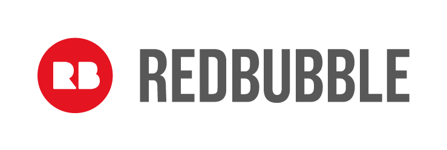

How to help WRR
Donations:
It costs us $200 to desex a female rabbit, $140 to desex a male and $25 to vaccinate each rabbit. This does not include any extra veterinary treatment that may be required for sick or injured rabbits in our care.
To help with the cost of caring for rabbits we accept monetary donations. The dontated money goes towards:
- pellets
- hay
- bedding
- letter
- vaccination
- spay and neutering
- check ups and other vet care on a case by case basis
Fostering:
We rely heavily on foster homes for our rabbits. Sometimes it can take a long time to find a forever home - so while they wait it's nice for them to have a “temporary” home and a family to love them.
What does fostering entail? There are a few different types of fostering:
- Overflow/when the shelter is full.
You will care for a desexed and vaccinated WRR bunny as if he/she were your own! The foster rabbit will need to come back to the shelter on adoption days. - Sick/injured.
You will need an indoor set up for this type of fostering. One of the team will show you how to care and medicate your foster rabbit. Once the rabbit is healthy and ready for desex/vaccination/rehome they can come back to the shelter.
If you would like to foster through Wellington Rabbit Rescue you will need to have your own set-up unless otherwise organized. This will need to meet the adoption requirements - 2 metres long, 2 metres wide and 1.5 metres high. The bigger the space the better!
The first step is to get photos of your set up through to us. You can send them via message or email: foster@wellingtonrabbitrescue.org
Then we will send you through a foster application form.
Supporters and Sponsors:
We would like to acknowledge the many individuals and organisations that have provided sponsorship and funding, and those who continue to do so today.
Without your generous support we would not be able to carry out the work that we do to rescue rabbits and educate people on rabbit welfare.
Rabbit treats and toys
https://www.facebook.com/forageforbuns/
Pet food and supplies
https://www.petpost.co.nz/
Boutique pet couches and soft toys
https://dutchanddutchess.weebly.com/
Olivia Bezett - Artist
https://oliviabezettartist.com/
Chrissy Taylor - Artist
https://www.artbychrissytaylor.com/

Four Legged Art
https://www.facebook.com/fourleggedart/

Elle Beeden
https://www.facebook.com/ebeedenart/
If you can help us with funding and/or sponsorship then please get in touch! We would love to hear from you!
Give A little:
Bank Details
Wellington Rabbit Rescue
12-3143-0359794-00
We also accept donations of:
- Hay
- Pellets
- Playpens
- Wood Shavings
- Toys
- Litter Trays
- Vegies & Herbs (please check our Rabbit Safe food lists)!
we also accept donation of quality items to sell at events such as:
- Knitted items (Knitted rabbits are always a hit)
- Crochet items (Again - rabbits are very popular)
- Artwork prints/cards
- Sewing (stuffed toy rabbits etc.)
- Jewellery
Shop and Support
You can buy from the following companies and support WRR! Some, or ALL of the proceeds go to our rabbits:
Redbubble

Wellington Rabbit Rescue branded clothing for all people, device cases and bags, stationery and home décor, All availiable from our Redbubble store.
Munchtime
Munchtime is your one stop online snack shop, delivering tasty snacks – from treats to everyday healthy (vegan and sugar free options available).
Wellington Rabbit Rescue is a registered partner so for each order made using the fundraising link WRR will make between 5% and 40% (depending on item) of the total cost of the sale!
munchtime.co.nz
Serious Sparkle Jewellery
offer a wide range of gorgeous handmade and imported jewellery for everyday wear, right through to elegant, sparkling pieces to compliment your bridal or formal ensemble.
Fluff and Co
 A selection of homeware, jewellery, clothing and accessories.
A selection of homeware, jewellery, clothing and accessories.
Dutch and Dutchess
All of the boutique products are hand-sewn and are made with washable fabric that is safe for all types of pets and come in a range of sizes. they also have hand-sewn custom soft toys.
Forage NZ
Boutique pet couches and soft toys – personalised items available.
Forage provides a range of premium natural and handmade gifts ,toys, treats & accessories for your rabbits